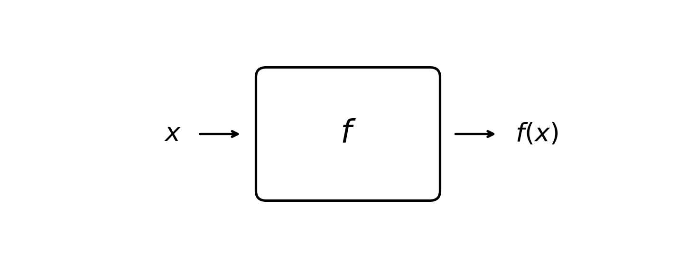
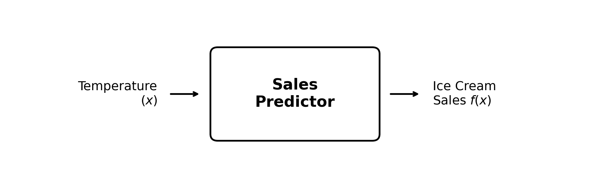
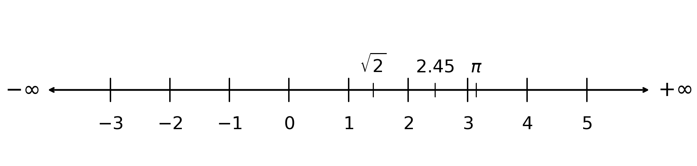
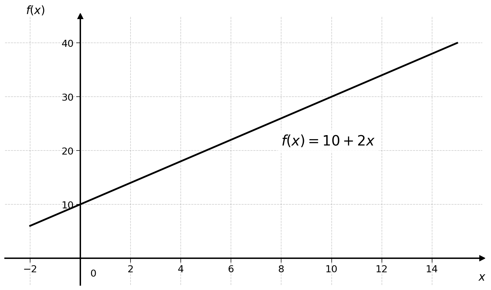
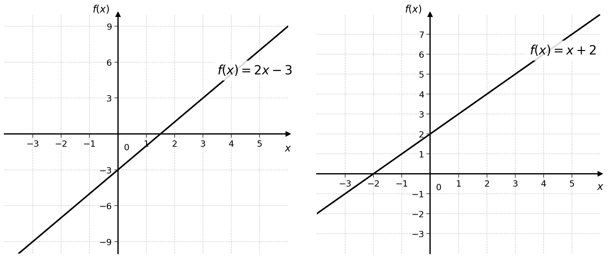
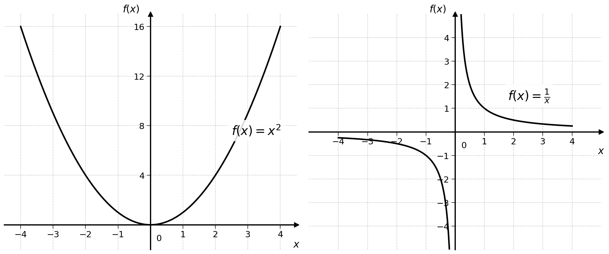

4 Functions
The mere mention of the name “function” is enough to bring back some traumatic middle school memories. Functions are not that bad though. I like to think of a function as a box or a big machine:

4.1 Functions as a Box
They take an input, noted \(x\), and generate an output, noted \(f(x)\). From the previous chapter, what is \(x\)? If you said “variable”, I am very proud of you. \(x\) is a placeholder for any kind of mathematical object (e.g., a number). Note that the name \(f\) is a convention, other letters like \(g\) or \(h\) are also common.
Functions are everywhere. A large language model, for example, can be seen as a function: it takes a piece of text as input and produces a continuation as output.
Going back to the ice cream example, the function \(f\) could be the machine that takes temperature as an input (\(x\)) and outputs the predicted ice cream sales for this day \(f(x)\).

This function can be a linear regression, like the one studied in the previous chapter:
\[ \text{Ice Cream Sales} = 10 + 2 \times \text{Degrees Celsius} \]
Replacing this with the \(x\) and \(f(x)\) notation, we get:
\[ f(x) = 10 + 2 \times x \]
For any temperature \(x\), we would get \(f(x)\) ice cream sales. If the temperature tomorrow is 5 degrees Celsius, the predicted sales would be calculated as follows:
\[ f(5) = 10 + 2 \times 5 = 20 \]
This is as easy as replacing \(x\) by the input temperature.
Exercise 4.1 Compute \(f(4)\) and \(f(6)\) for the function \(f(x) = 10 + 2x\).
Exercise 4.2 For the function \(g(x) = 2 - 4x\), compute \(g(0)\) and \(g(2)\).
4.2 Functions as a Map
Functions can also be thought of as maps.
\[ f(x) = 10 + 2 \times x \]
The function above maps the temperature in degrees Celsius to ice cream sales. It maps one number to another. But does it map any number to any other number?
As mentioned in the previous chapter, temperatures in degrees Celsius (on earth, at the time of writing) can only take a value between −273 and 60. So \(x\) can be any decimal number between these two values. This is called the domain of the function: the set of possible input values.
On the other side, \(f(x)\) cannot be negative, as it is impossible to sell −2 ice creams. \(f(x)\) must also be an integer, as it is not possible to sell 20.3 ice creams. So \(f(x)\) must be a positive integer. This is called the range of the function: the set of possible output values.
A function can then be thought of as the map between the set of possible input values and the set of possible output values.
In mathematics there are several famous groups of numbers. For instance, all positive integers: {1, 2, 3, …} are noted \(\mathbb{N}\) (for “natural numbers”). Some definitions of \(\mathbb{N}\) also include 0.
The group of all integers (positive and negative) {…, −1, 0, 1, …} is noted \(\mathbb{Z}\) (from the German word for numbers “Zahlen”).
The set of all decimal numbers we use every day is noted \(\mathbb{R}\) for “real numbers”. Real numbers can be thought of as a line going from \(-\infty\) to \(+\infty\). A real number is any point on that line.

The inquisitive reader may notice an issue with the current ice cream sales prediction function.
\[ f(x) = 10 + 2x \]
First, \(f(x)\) is negative for any \(x < -5\). For a temperature of -10 degrees Celsius, the predicted sales would be negative.
For ease of reading, we will happily ignore these technicalities. A more rigorous version of this function would complicate our notation unnecessarily.
4.3 Representing Functions in Space
Functions, just like lines, can be represented in space. For example, the function:
\[ f(x) = 10 + 2 \times x \]
Can be represented in two dimensions:

The first dimension is the input \(x\) and the second is the output \(f(x)\).
Exercise 4.3 Try representing the following functions in space by drawing points for several values of \(x\):
- \(f(x) = 2x - 3\)
- \(f(x) = x + 2\)
For the more adventurous readers:
- \(f(x) = x^2\)
- \(f(x) = \frac{1}{x}\)
Plotting these functions is the same as plotting lines with the \(y = 10 + 2x\) notation, replacing \(y\) by \(f(x)\).


4.4 Final Thoughts
Understanding functions as machines that transform inputs into outputs is fundamental to understanding how linear regression works.
The objective is to find the function that best maps an input (e.g., temperature) to an output (e.g., ice cream sales).
In the next part of the book, we will evaluate and compare linear regressions.
4.5 Solutions
Solution 4.1. Exercise 4.1
For \(f(x) = 10 + 2x\):
\[ f(4) = 10 + 2 \times 4 = 10 + 8 = 18 \]
\[ f(6) = 10 + 2 \times 6 = 10 + 12 = 22 \]
Solution 4.2. Exercise 4.2
For \(g(x) = 2 - 4x\):
\[ g(0) = 2 - 4 \times 0 = 2 - 0 = 2 \]
\[ g(2) = 2 - 4 \times 2 = 2 - 8 = -6 \]
Solution 4.3. Exercise 4.3
To plot these functions, calculate \(f(x)\) for several values of \(x\):
For \(f(x) = 2x - 3\):
| \(x\) | \(f(x)\) |
|---|---|
| 0 | −3 |
| 1 | −1 |
| 2 | 1 |
| 3 | 3 |
For \(f(x) = x + 2\):
| \(x\) | \(f(x)\) |
|---|---|
| 0 | 2 |
| 1 | 3 |
| 2 | 4 |
| 3 | 5 |
For \(f(x) = x^2\):
| \(x\) | \(f(x)\) |
|---|---|
| −2 | 4 |
| −1 | 1 |
| 0 | 0 |
| 1 | 1 |
| 2 | 4 |
This creates a U-shaped curve called a parabola.
For \(f(x) = \frac{1}{x}\):
| \(x\) | \(f(x)\) |
|---|---|
| −2 | −0.5 |
| −1 | −1 |
| 1 | 1 |
| 2 | 0.5 |
Note that \(f(0)\) is undefined (division by zero). This creates a curve called a hyperbola.